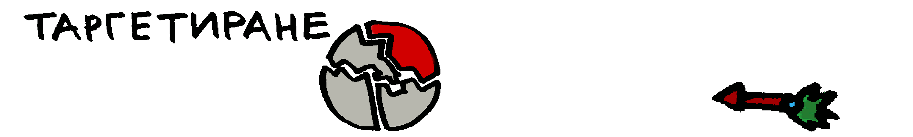

ВЪВЕДЕНИЕ В МАРКЕТИНГА
Таргетиране
След като решим на какви сегменти да разделим пазара, който сме избрали, идва ред на таргетинг, наречен още целеви маркетинг, тоест да се запитаме на кой ще продаваме.
Критерии за таргетиране
За тази задача може да ползваме няколко критерии:
- - привлекателност на сегмента (обем, потенциал): да се запитаме имаме ли достатъчно потенциални клиенти, както в момента, така и за в бъдеще.
- - фирмени ресурси (финансови, човешки, времеви): също имаме ли някаква уникална експертиза, която би ни позволила да обслужваме дадена част от пазара по- лесно, изгодно и ефикасно от конкурентите.
Видове таргетиране
Съществуват следните видове таргетинг: масов (недиференциран), диференциран, и концентриран.
- Масовият маркетинг е когато искате да обслужвате всичките възможни клиенти! Колкото повече- толкова по- добре. Такъв бизнес е МакДоналдс.
- Диференцираният маркетинг е когато имаме различен подход към различните клиенти. Такива са например шивачите, които правят костюми по поръчка.
- Концентриран маркетинг е когато се концентрираме върху един сегмент. Това е например фитнес инструктор, специализиран по филмови звезди, които се подготвят за екшън сцени.
Матрицата на Ансоф
При обмислянето на таргетинга, особено ако вече имате установена дейност, може да ползваме матрицата на Ансоф (продукт-пазар), публикувана през 1957 г. от математика Игор Ансоф:
| Съществуващи продукти | Нови продукти | |
|---|---|---|
| Съществуващи пазари | проникване в пазар | разработка на продукт |
| Нови пазари | разработка на пазар | диверсификация |
Най- лесната стратегия е проникването на пазара, тъй като не изисква допълнителни проучвания, единствено лека промяна на цената или продукта или повече реклама. Ако сте нова фирма обаче това може да е предизвикателство за вас, заради икономия от мащаба, с която се ползват вече съществуващите конкуренти, тоест тъй като те произвеждат вече даден продукт, няколко повече или по- малко не им струва толкова. Тази стратегия също си има ограничения- не е изключено да се стигне до насищане на пазара.
Разработката на пазар, още наречено разширяване, може да включва както навлизане в друга страна, особено като се замислим, че българския пазар е доста малък, но също и ползване на друг канал като преместване от физически магазин към онлайн магазин или привличане на съвсем различен от типичния ни клиент.
Разработката на продукт е видно, че изисква повече инвестиции, или за разработване или за придобиване на правата за производство на различен продукт, и е по- рисковано, но съответно евентуално по- доходоносно.
Диверсификацията е най- несигурната, но и най- удовлетворяваща стратегия, ако работи. Тук като показателен пример можем да посочим Гугъл и многобройните услуги, които предоставя като започнем от търсене, през имейл и стигнем до браузър и календар. Забележете обаче, че те не се колебаят да отрежат някой клон, ако не работи както се очаква от него, както направиха с rss четеца си. Също в този случай имаме синергия, например може да пращаме от имейла събитие или среща в календара си, но това не е задължително- фирмите на Ричард Брансън са в съвсем различни индустрии и пак са успешни.
Намерете своята ниша
Но може би не работите за голяма фирма и тези случаи не са ви от голяма полза.
Като започвате от нулата, обикновено бизнес консултатантите препоръчват да се пробвате с MVP в специфична ниша. Винаги може да добавяте, но ако премахнете нещо, с което клиентите ви са свикнали, е кофти.
Та какво е MVP? Съкращението Minimal Viable Product на български се превежда като минимален жизнеспособен продукт и представлява продукт, който има само основни функционалности, но все пак позволява да съберете обратна връзка за по- нататъшното му разработване. Може да погледнете ранни версии на туитър например, където няма изчистен дизайн, трендове или снимки, но все пак показва какви са възможностите. Понякога тук се включват и реклами с демо на още неготов продукт.
А защо е важно да си изберем ниша? Първо, ако се опитваме да спечелим всички, със сигурност ще се претоварим. Второ, да го погледнем от другата страна, ако си търсим фотограф за сватба дали ще изберем този с титла фотограф или сватбен фотограф. Трето, много по- лесно е да намерим бъдещите си клиенти, ако имаме по- ясна идея кои са те точно, към какво се стремят и къде се събират.
Плюс това, винаги е по- добре клиентите ви да мислят, че нямате конкуренция. Ако заниманието ви е достатъчно специфично, не се състезавате с никой, освен със себе си.
И запомнете, винаги може да разширявате целевата си група или да си изберете нова. Важното е да започнете!